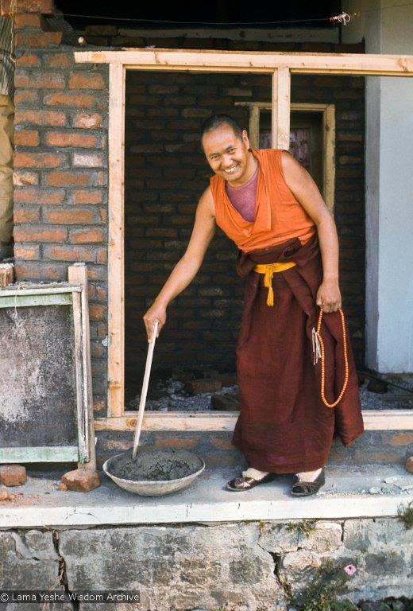
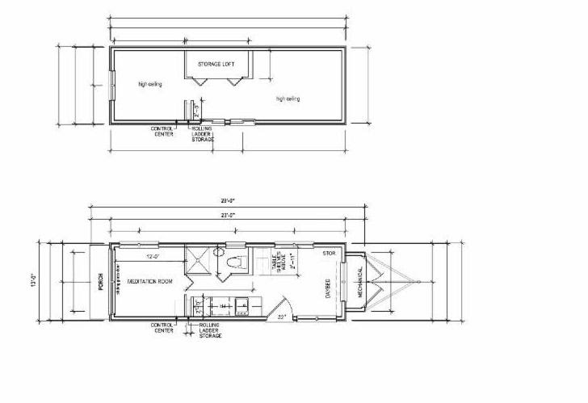
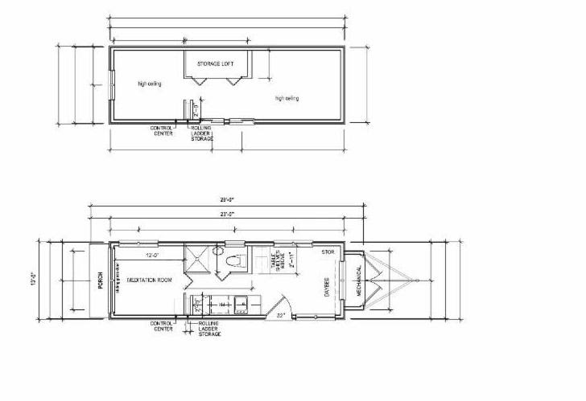
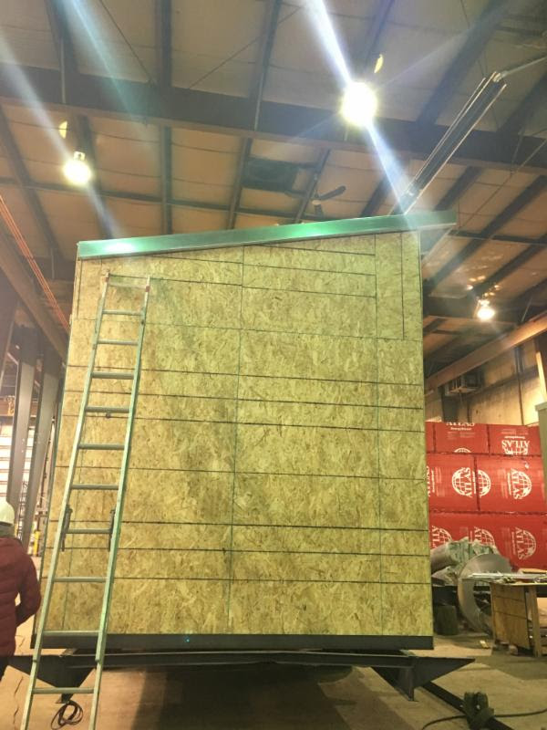
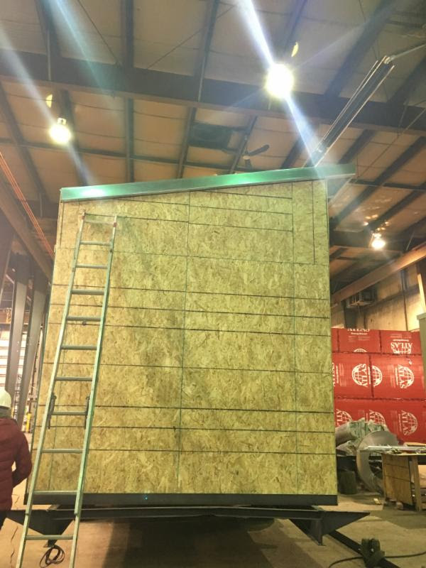

Milarepa Center is now in its 35th year! Over that time the Center has served many with teachings, initiations, retreats and contact with Buddha Dharma. It is a huge tribute to previous boards, directors, donors, staff and volunteers that the Center has been able to offer so much over this time.
Physically the Center is a beautiful land of 276 acres with the main farmhouse, once a family home. However as many of you know, our facilities are in dire need of upgrading.
Operating Milarepa Center in its current form is extremely difficult. Currently, Milarepa Center is operating as a hybrid between being a teaching center and a retreat center. The "hybrid" operating model is a long way from self-sustaining and has only appeared viable due to a few large donations, which have supplemented revenue from courses, retreats and the bookstore.
Trying to operate the Center as this hybrid teaching/retreat center, except for the brief periods when there has been a resident teacher, has always been a struggle.

The Center recently applied to FPMT to receive and host a resident Geshe with a view to expanding the range of courses and practice available. When the karma to host a resident teacher manifests, it will still take time for the community to build up sufficiently to provide the necessary financial support. There is currently possibility to receive a Geshe from Kopan Monastery, but he would require a translator to accompany him.
As a retreat center with only two three-season retreat cabins, our facilities are rudimentary at best. Many of you are aware from your magical visits, there are limitations to the Milarepa experience; the entire facility shares one indoor shower and two flush toilets, which at times can be upwards of 30 people needing to use these facilities. Making a solitary retreat at Milarepa Center is restricted due to the circumstances of having daily to enter the common area (shared by staff, day visitors and group retreats) for breakfast and use of the bathroom/shower. Opportunity to make long-term retreat is not currently available due to the lack of winterization in the existing cabins.
Over recent years, Lama Zopa Rinpoche has repeatedly stressed the need for students to do retreat. Rinpoche says retreat is all that is left for students who have already received so many teachings, initiations, pilgrimages and done so much practice. Given that we are called a retreat center, we feel Milarepa Center can and should develop to fulfill that need.
Lama Yeshe explained, "Why is retreat important? In order for our spirituality, pure morality, wisdom, single-pointed concentration and insight into reality to grow, we need time and space...You can see, even in European history, that Jesus and other great spiritual leaders went into solitary retreat. Christian, Muslim, Indian, Tibetan; all the great mahasiddhas went into isolation for certain periods and gained their high accomplishments through practicing intensively like that." 
Many have been inspired by a vision of the Milarepa Center that is financially sustainable and offers comfortable facilities and support for retreaters. To this end, a great deal of excellent work has already been done in the past developing a master plan concept along these lines. However, progress has been hindered by a few major hurdles like upgrades to the septic system.
The Board that assumed oversight of the Center in September 2015 has spent the last six months carefully analyzing the situation in detail. It is clear that development of the infrastructure is crucial if Milarepa Center is to fulfill the vision of so many, including Rinpoche. Not only that, it is clear now is the time to complete these projects, through which the Dharma can be allowed to flourish for many years to come. We are particularly glad to report that Lama Zopa has endorsed our plans to move forward in a concerted manner with upgrades.
Consequently the Board has decided to focus all efforts and energy in the near term on developing a financially sustainable Milarepa, which includes rejuvenating the existing facilities and attempting to create new retreat facilities with a view to making those available in 2017.
This means we will not be able to offer all of our usual programs over the summer. This was a difficult decision, however we are confident in the long term it will prove beneficial. At present we do not have the "people power" or finances to run programs and simultaneously upgrade facilities. So, at the same time we hope you will see this as an exciting project for the future of Milarepa Center.
We look forward to resuming local programming and group retreats, hopefully with a resident Geshe, in the beginning of 2017.
We invite you to take this first step with us, towards true sustainability and setting a new standard in the world of retreat centers. We are looking into pre-fabricated all-inclusive retreat studios and "tiny homes" that would allow anyone to practice and access the beauty and magic of the Milarepa experience. The concept is to be able to provide practical, self-contained and comfortable units that include all facilities and services - water, power, sewerage, fully winterized and heated.
We are re-engaging professionals who previously helped with the Milarepa Center planning. Within the next few months we expect to contract for advice and permit applications for the expansion of our septic and water systems.
We have already visited a number of prefab home suppliers and will continue to do so over the next few weeks. We will be visiting companies across the North East, Ontario and Quebec to determine which can produce to our specifications for high quality, self-contained retreat units.
Currently, we are aiming to provide units with a main meditation room minimum 10' x 10', kitchenette, bathroom with shower, sleeping area and lots of windows for the amazing views, all within 200 to 250 ft.² In addition, we hope to provide a covered patio. Over the years there have been requests for twin shared units, and we will be looking into these as well.
Various types of units we are investigating are shown below for illustration purposes only at this time. Our goal is to install between three to five beautiful retreat units on site by fall 2016.

To fund this we have a number of possibilities.
We are considering offering prepaid retreat timeshares. Prepayments will help fund the purchase of the initial units, and we hope those with retreat commitments will be encouraged to book and prepay for a certain amount of retreat time per year. For example, you may wish to have ten days retreat time per year for three or five years. Others may like to book one month retreat per year for one, three or five years.
If you are able to sponsor an entire retreat unit, the unit will be available to you for retreat whenever you need. When you are not in retreat, by mutual agreement, the unit will be available for the Center to rent to other retreaters.
Some prefab unit suppliers offer 'rent to own' facilities that we will explore. Additionally, we will be approaching institutional lenders.
We warmly encourage anyone excited by this idea and who is financially able to offer the Center a soft loan for up to three years. Initial calculations show that five units would cover the capital costs within three years. Thereafter, five units could generate sufficient revenues that the Center would be self-sufficient.
Being a Friend of Milarepa is another way to help support this project. Your monthly Friendship donation is a reliable source of revenue on which the Center can rely. This helps us plan for what we are able to accomplish annually, such as building new retreat cabins and bringing a resident Geshe to Milarepa Center. Friendship is part of our sustainable plan for Milarepa Center.
Want to do something immediately to support our next steps? Donate online today. We are so grateful for your enthusiasm.
We have engaged legal services to help us prepare various forms by which all of the above types of funding possibility can be secured with proper documentation.
Would you be interested in joining the Board?
We, the current Milarepa Center Board of Directors, are looking to expand and benefit from a more broad range of skills. If you feel you could help and are driven by the mission to develop Milarepa Center into a fully functioning, self-sufficient all-year retreat center - and with the possibility of also hosting a resident Geshe - please reach out to Felicity so we can talk further. Interested? Email or call (802.633.4136) Felicity.
We will keep you updated as each milestone is reached, so you can cheer us on and rejoice with us as we reach one step closer to actualizing this shared vision for Milarepa Center, our East Coast Retreat Center.
We welcome all forms of support including advice, suggestions, feedback on the concept, inquiries and interest in taking a timeshare retreat plan, sponsoring a unit, advancing a loan or "Like" on our Facebook and Instagram pages.
Please let us know what you think - we are listening.
Email us or give us a call at 802.633.4136.
Yours in Service,
Milarepa Center Board of Directors
 

 
